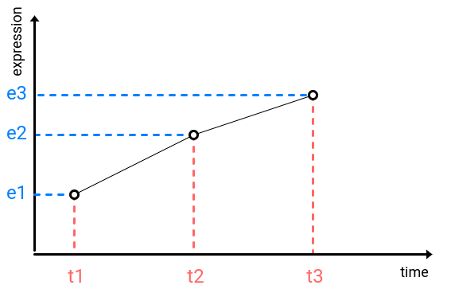
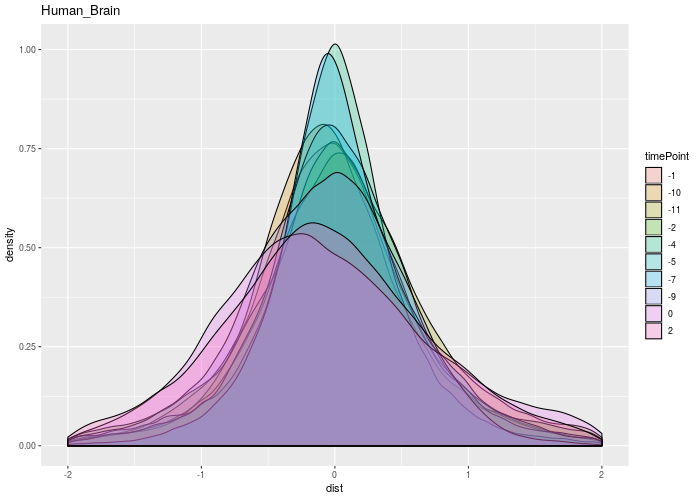
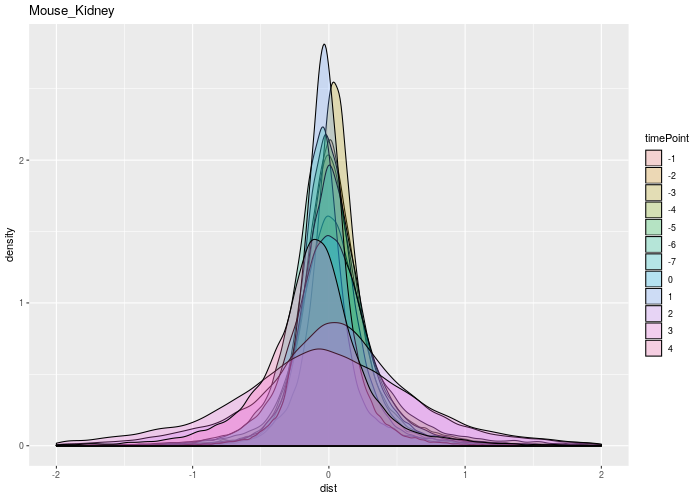
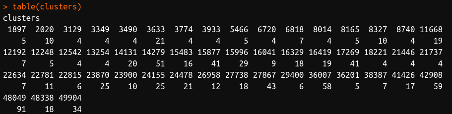
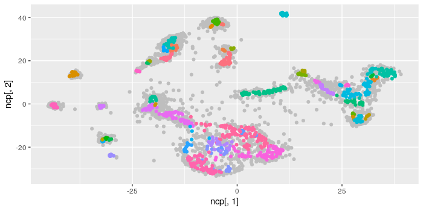

8-16 time points, 1-3 samples per time point of each sex
If for many genes \(e_2 - e_1 > e_3 - e_2\), then \(t_2 - t_1 > t_3 - t_2\)
|  | \[v = \frac{|e_2 - e_1|}{t_2 - t_1}\] |
|  |  |
fitM <- locfit.raw(xM, dataTableM$expr,
weights = rgamma(nrow(dataTableM), shape = 1, scale = 1), ev = grid)
Some genes have very similar trajectories
Keep only cliques of size 4 and larger with at least half of vertices corresponding to protein coding genes with significant difference between sexes. Remove all other edges.
51 clusters of size from 4 to 91
863 clustered genes. Among them 247 with adj.pvalue > 0.1
51 genes, among them 47 ribosomal proteins
|
FAU |
BTF3 |
NACA |
This is a very wrong way to put them together
